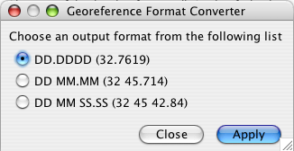

The Latitude/Longitude Converter tool converts the geocoordinate formats within the Latitude1 and Longitude1 columns of a Data Set. The tool can either replace the original format or keep the original and store a new format in the Lat1Text and Long1Text columns.
The tool button, , is located on the Workspace Item Bar when editing a Data Set in Grid view.
The button is only enabled when the active Data Set includes the Latitude1 and Longitude1 columns.
To keep the original formats in the Latitude1 and Longitude1 fields the Data Set must also include Lat1Text and Long1Text columns.
Note: The Lat1Text and Long1Text Columns can only fill once, if a second conversion is performed the new geocoordinates will replace the original values in Latitude1 and Longitude1.
To begin, select either the Latitude1, or Longitude1 column (or both).
Click the button. The following dialog will appear:

Georeference Format Converter
Select the new georeference format and click 'Apply'.